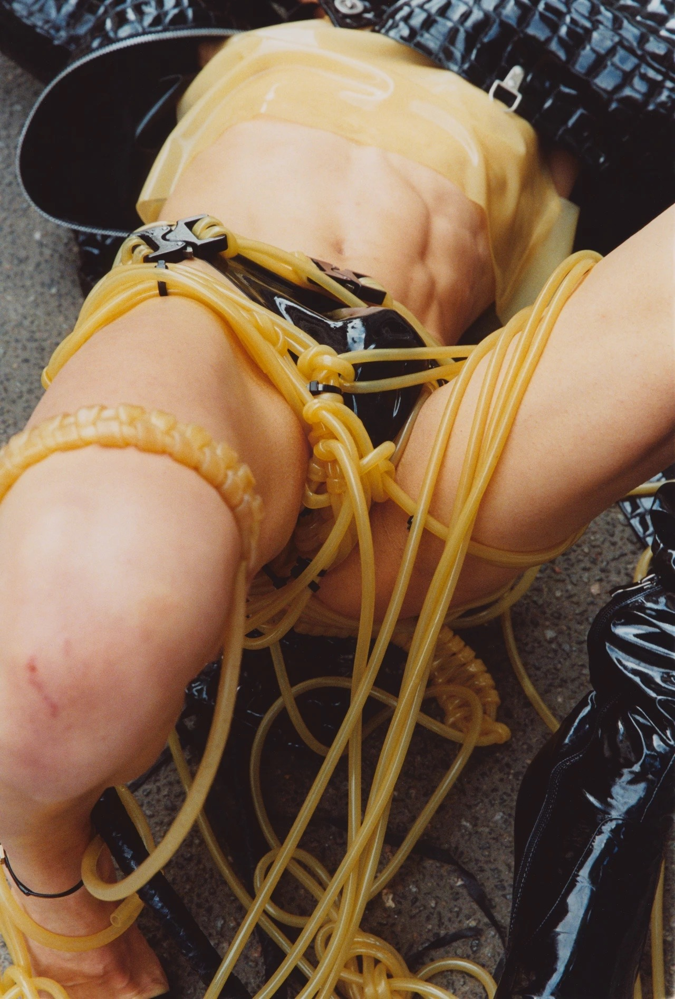

Blatth
Between melodies and metamorphosis: a few words on Arca's self-titled
The context of this work is extremely important: we are at a turning point in the artist's life, prior to her transition. That is why this creation can be described as a farewell to her old self, as well as a way of facing all those questions that were presented to her throughout her life.
In this work, what we are presented with is a vivid portrait of the longing and sterility present in the wireless era. Drowned in a dark, minimalist and melancholic sound, it manifests the perspective of a person who perceives herself as incapable of loving and, in turn, of being loved.
The sound of the album, characterized mainly by the creation of intense and carefully elaborated atmospheres, could be broadly described as Art Pop, although, nevertheless, it is greatly influenced by IDM and Ambient. In addition, it is important to highlight the relevance of Latin rhythms in specific tracks: Bolero in Anoche, Nueva Canción Latinoamericana in Coraje and Tonada Chilena in Sin Rumbo. This very characteristic sound could be considered as what Mark Fisher previously described in “Another Grey World”; the displacement of 21st century post-dance music from the collective experimentation of affections towards the privatization of emotions.
The millimetrically crafted and introspective sound is accompanied by deep lyrics, which could be described as a window into the abyss: both her voice and what she communicates are purely charged with panic. Arca does not know about distances, indeed, she is terrified of them. Throughout the whole album she makes this clear, delving into her original purpose and emotion, longing, even without knowing to whom or to what it is directed.
We could affirm that, throughout the album, she does not constantly refer to a third party, but also to her own questionings and desires that she is unable to satisfy (or at least that is how they are presented). The track that best defines the above described is Anoche, where the lyrics remind me of a fragment of “The Tears of Eros” by Georges Bataille:
